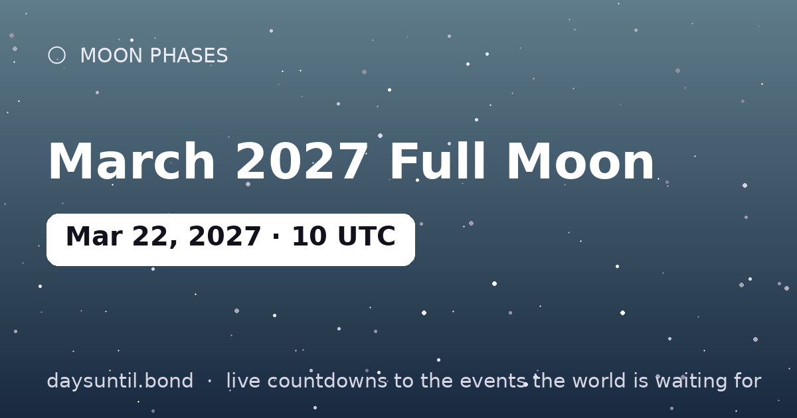

How Many Days Until March 2027 Full Moon?
–days
–hours
–minutes
–seconds
March 2027 Full Moon falls on Monday, March 22, 2027.
📅 – weeks
💼 – weekdays
🛌 – weekend days
🗓️ – months (approx)

Quick facts
| Peak (UTC) | March 22, 2027 · 10:45 |
|---|---|
| Zodiac position | 1°35' Libra |
| Moon phase | Full Moon (100% illumination) |
| Cycle | Lunation ~29.5 days |
About March 2027 Full Moon
The March 2027 full moon peaks at 10:45 UTC on March 22, 2027, at 1°35' Libra in the tropical zodiac. Full moons always rise at sunset and set at sunrise, so the best viewing is any time the Moon is up that night — no equipment needed.
In astrology, the full moon in Libra is considered the month's closing chapter: what began at the Libra new moon six months earlier reaches fullness, and what is no longer working becomes impossible to ignore. Monthly full moons are the sky's built-in review meetings.